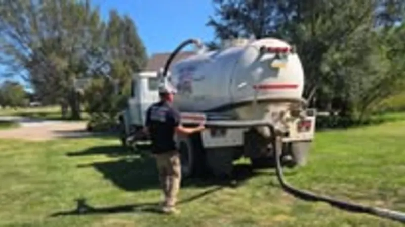
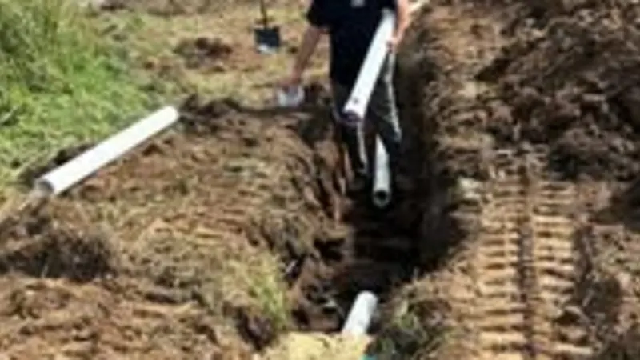
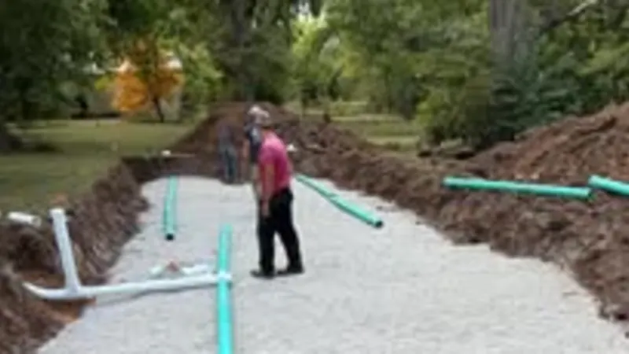
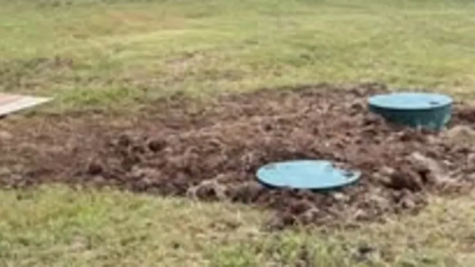
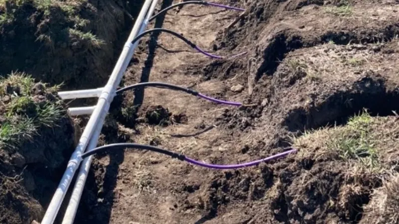

Septic Installation
New systems for raw ground, and replacements for systems that have failed past fixing. Dug, set, laid out, backfilled and graded, with the county inspections handled.
Septic installation in SalinaSeptic first, and the site work that goes with it. Mike's Services LLC handles the heavy work for property owners across Central Kansas.
Septic is most of what we do: new systems, pump-outs, repairs, inspections and soil tests, across Saline County and Central Kansas.
New systems for raw ground, and replacements for systems that have failed past fixing. Dug, set, laid out, backfilled and graded, with the county inspections handled.
Septic installation in Salina
Routine pump-outs and clean-outs with our own truck. If you can't remember the last time yours was pumped, it is due.
Septic tank pumping
Sewer backups, plugged lateral lines, yard drains and drain tile. Cleared, or dug up and fixed when clearing won't do it.
Sewer and drain cleaning
Failing drain fields, cracked tanks, broken distribution boxes and crushed lines. We find the part that failed before replacing anything.
Septic repair
Buying or selling a place in the country? Know what is in the ground before closing. If the system is fine, we say so.
Septic inspection
The soil test that decides what system your ground will take. Clay and limestone are why it matters out here.
Perc test and soil testingThe dirt work around a septic job, and the same equipment on its own: trenching, clearing, tearing down old buildings and building pads.

Utility and water line trenches, footings, driveways and drainage.
Excavation and trenching
Cedar, brush, tree rows, hedge rows and overgrown pasture.
Land clearing
Old farm houses, barns, sheds, grain bins and cattle pens. Torn down and hauled off.
Farmstead demolition
Graded and compacted pads for shops, pole barns and new homes.
Building pads and site prepCall us and describe your project. We will tell you exactly what it takes and give you a clear quote with no runaround.